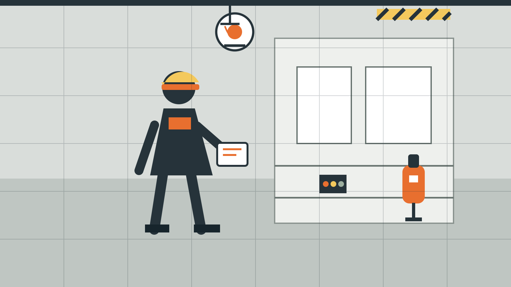

消防設備の点検・保守・施工
関西エリア対応 / SAMPLE WEBSITE
関西エリア / 消防設備関連

消防設備を、日常から整える。
○○○○株式会社は、関西エリアで消防設備の点検・保守・施工を行う会社を想定したWeb制作サンプルです。建物を使う人の安心につながる業務を、分かりやすく伝える構成にしています。
対応業務
消防設備会社のサイトでは、業務の幅より先に、依頼できる内容が一目で伝わることを重視しました。カード型ではなく、現場業務の一覧としてシンプルに整理しています。
建物内の消防設備を確認し、異常の有無や交換時期の目安を整理する業務を想定しています。
不具合への対応、部品交換、機器更新など、設備を維持するための保守業務を想定しています。
新築・改修に伴う消防設備の新設や変更について相談できる施工サービスを想定しています。
地域で支える防災設備
関西エリアを対応地域とし、ビル・店舗・事業所などの設備相談を受ける会社を想定しています。専門性だけでなく、連絡先や対応範囲がすぐ分かることを大切にした設計です。
会社概要を見る →
サンプルのお問い合わせページで、相談導線をご確認いただけます。